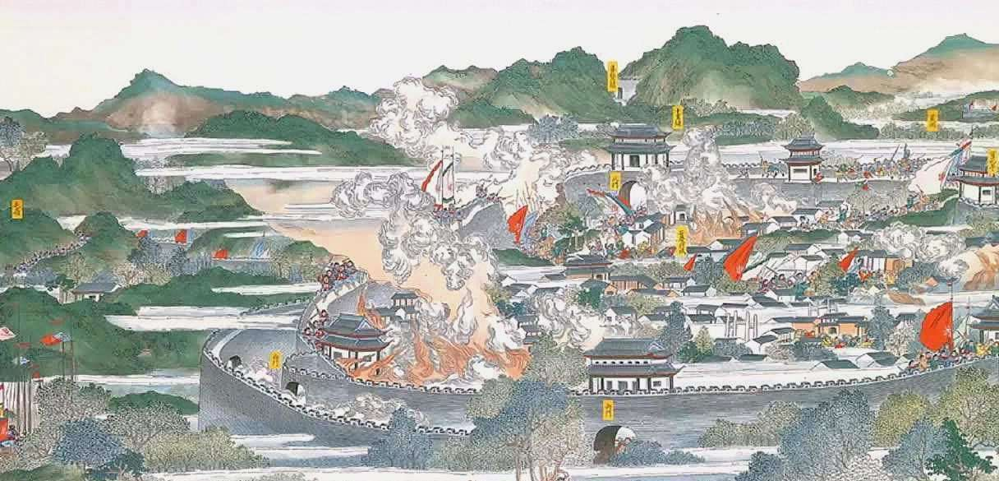

二破江南大营战役战前局势与决策商讨
时间：1859年 人物：洪秀全、李秀成、洪仁玕

综观1859年的形势，太平天国既出现了新的希望，也存在不少困难，特别是天京仍处于江南大营清军的包围之下，总的形势依然相当严酷。
面对上述情况，李秀成一再向洪秀全“强奏”，要求率军离开浦口，设法攻打江南大营，以解京围。这一要求最后得到了洪秀全的应允。
关于如何解围问题，李秀成与洪仁玕进行过三次面商。洪仁玕认为：“此时京围难以力攻，必向湖、杭虚处，力攻其背。
彼必返救湖、杭，俟其撤兵远去，即行返旆自救，必获捷报也。”李秀成同意这一计谋，便与洪仁玕共同确定了如下作战方案：
（一）由李秀成、李世贤率部“伪装缨帽号衣，一路潜入杭、湖二处”，攻敌之所必救，以吸引和调动江南大营清军； 当出现上述情况时，立即放弃浙江杭州和湖州（今吴兴），由小路回师天京，围攻江南大营。
（二）由英王陈玉成执行“虚援安省”的任务，在皖北实施佯动，以掩护江南之作战行动。整个作战由李秀成负责组织实施。
（一）由李秀成、李世贤率部“伪装缨帽号衣，一路潜入杭、湖二处”，攻敌之所必救，以吸引和调动江南大营清军； 当出现上述情况时，立即放弃浙江杭州和湖州（今吴兴），由小路回师天京，围攻江南大营。
（二）由英王陈玉成执行“虚援安省”的任务，在皖北实施佯动，以掩护江南之作战行动。整个作战由李秀成负责组织实施。